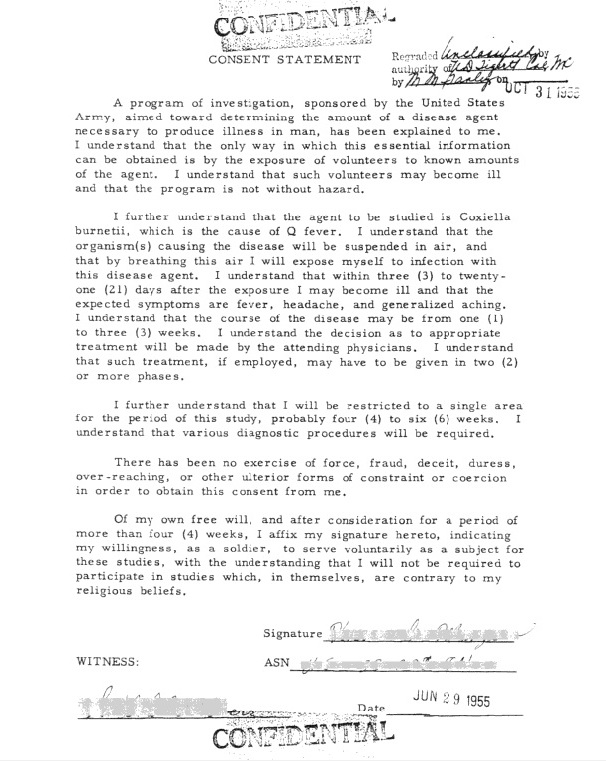

FILE A42-HM-007 // HEALTH & MEDICINE
Operation Whitecoat Volunteer Studies
ASSESSMENT: Consented volunteer research still requires scrutiny.


The claim and its context
Operation Whitecoat did expose volunteer service members to infectious agents in controlled studies. The specific claim that researchers secretly infected conscientious objectors is not established by available accounts, which describe a formal volunteer program and consent process. The quality of that consent still warrants scrutiny.
The program ran at Fort Detrick from 1954 to 1973. Conscientious objectors volunteered for research on biological defense and treatment. Records describe consent, but its quality must be assessed in light of the period’s power imbalance and what participants were told.
What is documented
The program involved deliberate exposure to selected agents, monitoring, and research aimed at prevention or treatment. Its military setting is real. Neither that context nor an institutional history proves every participant was coerced or that every procedure met contemporary standards.
Clinical and epidemiological evidence
Historical studies generated data on disease course and countermeasures, but protocols differed. Results from selected adult volunteers do not automatically generalize to children, older adults, or natural outbreaks. Modern efficacy relies on current controlled evidence, not the program’s existence alone.
Contrary evidence and genuine uncertainty
Public access to individual records and long-term follow-up is limited. The military’s institutional account is not an independent ethical review. There is no strong evidence that Whitecoat was a covert population experiment on civilians.
Calibrated assessment
The best-supported assessment is a military volunteer research program with unusual risks and safeguards deserving scrutiny, not a proven secret mass-infection plot. Its history underscores the importance of independent review and voluntary consent.
A responsible evidence test
For alleged harm, seek a specific protocol, consent form, exposure record, follow-up, and independent medical assessment. Do not infer current risk from historic volunteering. Use qualified clinicians and current public-health sources for personal decisions.
Source notes and limitations
- USAMRIID — Operation Whitecoat historical overviewInstitutional history; compare with participant and ethics records.
- National Library of Medicine — For God and Country: Operation Whitecoat, 1954–1973Catalog record for a program-specific history; not an independent clinical trial.
- National Commission — The Belmont ReportLater ethical framework, useful for principles rather than event details.